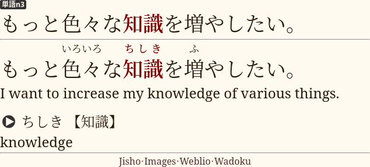

Ankidrone Starter Pack
After finishing kanji, kana and essential grammar the bulk of your AJATT journey will consist of learning vocabulary. As the first step in this process, it makes sense to go through a basic vocabulary deck containing the most frequent words in Japanese. As before, you are going to use Anki to do it.
Motivation behind studying basic vocabulary
Not all words are created equal. In Japanese, the most frequently used 1,000 words comprise around 75% of all written language. Similar ratios exist for virtually all languages. If you just prioritize the most vital words, the ones that you hear and see a lot, you can rapidly acquire a language.
After memorizing the most frequently used 1,000 or 2,000 words learning vocabulary from immersion becomes easier. When reading you'll be able to recognize the majority of words in a given sentence. You will still have to look up many words per page, but the learning process is going to take less effort.
Focus on understanding
On this site I recommend that you learn to understand Japanese through immersion before trying to speak it. Once you can understand the language, learning to speak doesn't take any effort.
The Anki deck I'm about to introduce below is going to help you understand the language. Cards in the deck are designed to test your recognition instead of forcing you to recall words from memory.
Words and sentences
Our preferred way to learn new words is by reading and understanding sentences. We believe it's the most natural approach. When immersing we encounter sentences and phrases much more than isolated words. Besides, understanding sentences is easier than understanding words. The additional context triggers the memory at times when the meaning of a single word would slip away.
Of course, it's not possible to start reading full sentences if you know no words yet. To work around this temporary hindrance we employ targeted sentence cards. A targeted sentence card is a flashcard that gives you context but knowing the context is not mandatory to pass the flashcard. Only the target word is taken into account. So, if you know the context, it helps you out. If not, you treat the flashcard as an isolated word. This idea quickly starts working in your favor. Once you've learned even just a few hundred words, your comprehension expands substantially. As you're beginning to understand not just isolated words, any extra exposure you get from reviewing sentences in Anki reinforces your memory. Sentences help you better understand how the words are being used in speech, what roles they play in a sentence and how they connect with other words. You don't get any of these benefits if you use isolated vocab cards (word cards).
Anki deck
In our community Ankidrone Starter Pack is the generally recommended Anki deck for newcomers to Japanese who want to quickly learn basic vocabulary before they start reading. Since the first release in February 2020 it has helped many people and received positive feedback.
Structure
Ankidrone Starter Pack contains sentences extracted from JLPT Tango books. There are 5 subdecks.
- Ankidrone Starter Pack
- JLPT Tango
N5 - JLPT Tango
N4 - JLPT Tango
N3 - JLPT Tango
N2 - JLPT Tango
N1
- JLPT Tango
Most cards are preformatted as targeted sentence cards (TSC), the ideal card template for both beginners and advanced learners. Note that TSCs are not regular sentence cards you find in other decks and should be treated differently.
Although learning sentences is the best way to get familiar with how language is used and grammar structures are formed, in practice when a new learner starts with one of the premade sentence decks available on AnkiWeb, it is rare for all sentences to introduce only a single unknown word. One way to deal with it is to make isolated vocab cards. TSCs bypass the problem by making the target word the only tested piece of knowledge while retaining the context and the ability to read the full sentence.
Each card includes speech recordings stored in Opus format. It offers great compression and remarkable audio quality at low bitrates.

A card from the Tango N3 sub-deck.
Tango decks
Tango decks are based on JLPT Tango textbooks designed to prepare for the JLPT. There are five books total, one for each level of the JLPT. The books include vocabulary found commonly on the test and often used in everyday life. Cards are ordered in such a way that most sentences only introduce a single new word or grammar pattern.
The order of cards and focus on words commonly used in daily life in Japan makes these decks an ideal instrument to complete the basic vocabulary stage.
Core10k
Ankidrone Core10k is an extra deck that contains sentences from iKnow.
Core10k is a very famous deck among Japanese learners. Its format is roughly similar to the Tango decks. Each card contains a target word within an example sentence on the front. You have readings, translation, word meanings and audio on the back.
The additional 10,000 sentences are definitely an overkill for someone who has completed the Tango decks. I include Core10k here for reference. Use this deck to supplement your sentence bank in the sentence mining phase. You can refer to it to find example sentences. Don't learn it back to back. Note that vocabulary in the deck largely overlaps with the Tango decks.
The extra deck can be separately downloaded from here.
How to study
Learn all cards from Tango
N5. If you've already completed the Kanji Transition deck, skip TangoN5because they're identical and differ only in their card templates.Start sentence mining using TV-shows with Japanese subtitles, and later manga and novels.
Sentence mining is the process of finding sentences with words you don't know in your immersion and making them into sentence cards. The browser add-on Yomichan simplifies this process to a single click, so that all you need to do to add a card to your deck is hover over a word and click the
+button in the popup. mpvacious is an add-on for mpv that works similarly to subs2srs and can be used together with Yomichan to create Anki cards while watching subtitled content.You'll learn more about sentence mining on the subsequent pages of this guide.
While sentence mining, learn Tango
N4,N3andN2at a reduced pace. It is critical not to spend too much time on beginner decks and focus on mining.The rest can be used to aid your learning process later. The higher level you reach, the less benefit from premade decks you will get. Refer to Core10k when you have trouble finding example sentences.
How to review
- Try to recall the meaning and reading of the bolded word.
- Use the context to understand how the word connects with other words.
- Press "Good" if your guess is correct. Otherwise press "Again".
- Don't use the "Hard" and "Easy" buttons. Install AJT Flexible Grading to hide them.
For more detailed instructions see How to review.
Tips
- If you can't seem to remember a card, try Mortician. The add-on postpones difficult cards preventing them from stealing your time.
- Feel free to skip words that exist in languages you know.
Examples include many katakana words, such as
タクシー,エアコン,イクラ. Even though they're pronounced differently in your language, you learn them easily from immersion alone. To suspend a card, press@on the keyboard. - In the books they teach many country names. The purpose of learning them is apparently to understand self introductions as well as be able to give one yourself. You can skip them too without losing too much.
- Don't do too many new cards a day. At first, it may seem easy, but eventually Anki will overwhelm you with reviews. Our recommended boundaries are 10~30 new cards a day.
- Don't take English translations literally. The English translations of the example sentences often don't match word-by-word. To understand their meanings in Japanese you need to know the underlying grammar structures. Studying sentences can't completely replace a grammar guide. If there are grammar patterns that trip you up, look them up in a dictionary like Jisho.org or on Google.
Sources
- Tango
N5and TangoN4decks were shared by Anonymous from DJT. - Tango
N3was shared by Perditio. - Tango
N2was made by a team of volunteers. - Tango
N1was made by a team of volunteers.
Changelog
Changes in version 7:
- Added JLPT Tango
N1. - Fixed small mistakes.
Changes in version 6:
- Added JLPT Tango
N2.
Changes in version 5:
- Added word audio to TSCs in Tango
N3and TangoN4. - Fixed small mistakes.
Changes in version 4:
- Converted all remaining sentence cards to TSCs
Changes in version 3:
- Added JLPT Tango
N3. - Added a separate note type for SWCs to distinguish them from sentence cards.
- Improved definitions on SWCs
- Added pronunciations to SWCs that didn't contain any audio
- Fixed typos in JLPT Tango
N5(Thanks zofpz)
Changes in version 2:
- Audio files were repacked, silence trimmed, bitrate increased.
- Included a description explaining how to use the deck.
- Core10k vocabulary sorted using the Netflix frequency list.
Feedback
DJT space has a Tango deck feedback room to give feedback on the deck. Join us.
Similar Anki decks
Resources page contains a Vocabulary section with Anki decks suggested by our members.
AnkiWeb has a wide variety of premade decks for Japanese. When browsing the catalog, I recommend you prefer decks that contain audio recordings and example sentences. It is important that the example sentences always appear on the front of the cards because it is easier to learn words when you see them in context. If you download an incorrectly formatted deck, make sure to fix the card template in settings.
A little trick you can do to filter results is search AnkiWeb with Google.
Intermission
From the BCCWJ語彙表 dataset mentioned in the beginning of the article we find the following.
| Most frequently used N words | % of written Japanese |
|---|---|
| 1,000 | 75% |
| 2,000 | 80% |
| 3,000 | 85% |
| 6,000 | 90% |
| 10,000 | 93% |
| 15,000 | 95% |
| 32,000 | 98% |
| 50,000 | 99% |
How do you calculate it?
If you have downloaded the frequency list, you can calculate the percentage for the first N=1000 words with this Shell snippet.
N=1000; {
sed "1d;$((N+1))q" BCCWJ_frequencylist_suw_ver1_0.tsv | cut -f 8 | awk '{s+=$1} END {print s}'
echo '/1000000'
} | paste -s -d '' | bc -l
You're expected to progress very quickly in your first months of doing AJATT. Unfortunately, the reality is that we quickly hit the point of diminishing returns. The more words you learn from that point, the slower your comprehension increases.
The bright side is that you can use the numbers as milestones. Reaching each milestone is like winning a small game, and it makes learning your target langauge feel less like a routine.